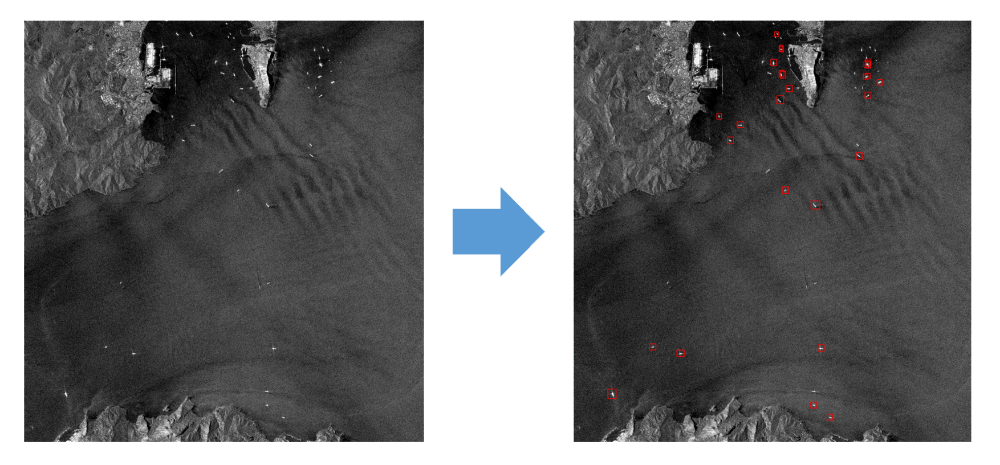

Vessel Detection with AI: SAR Imagery and Faster R-CNN Models
As part of a master’s project, I developed an object detection model to identify vessels within satellite imagery. Using computer vision techniques in combination with Synthetic Aperture Radar (SAR) images, I created a model capable of detecting ships in open ocean and coastal areas. Specifically, the Faster Region-Based Convolutional Neural Networks (Faster R-CNN), a state-of-the-art object detection algorithm, was used in combination with high-resolution Sentinel-1 images. The aim of this project was to showcase the effective use of these advanced tools for maritime surveillance.

Decoding Vessel Detection in Satellite Imagery
To train the model, a pre-annotated dataset, the Large-Scale SAR Ship Detection Dataset v1.0 (LS-SSDD-v1.0) by Zhang et al. (2020), was used. This dataset was selected as it is sizable enough for the training process while being manageable within the computational resources included in a free Colab account.
Furthermore, I used Detectron2, developed by Facebook AI Research, to construct the Faster R-CNN model. Detectron2’s extensive resources, advanced algorithms for object detection, and pre-trained baseline models made it the most suitable framework for this project.
Data preprocessing included removing images without annotated vessels, splitting the dataset into training and testing sets, and registering the datasets within Detectron2. After some training and testing, the performance of the model was improved by applying various image pre-processing techniques, such as data augmentation. We augmented the input data by applying a variety of changes, including resizing, flipping, and adjusting the brightness, contrast, and saturation of the image. The trained model was then evaluated using the Common Objects in Context (COCO) Evaluator, and a custom evaluator.
Project Outcomes and Resources
The goal of the project extends beyond simply developing and testing the model. The endeavor also emphasized the creation of comprehensive and accessible documentation to facilitate understanding and replicability. The following GitHub repository contains all the necessary scripts and notebooks:
https://github.com/pcarbomestre/SAR-VesselDetection-FisheriesMonitoring
With it, I hope to contribute to this field by reducing the barriers of entry for individuals interested in vessel detection applications using machine learning, making this complex field more accessible and fostering knowledge exchange and collaborative learning.
Acknowledgments
The success and execution of this project owe a great deal to the foundational work and code provided by several individuals. My gratitude goes to @jasonmanesis, @eikeschuett, and @jakee417. Their invaluable contributions have significantly facilitated each stage of this project.